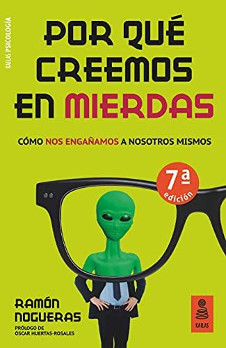

Por qué creemos en mierdasRamón Nogueras

Por qué creemos en mierdas
Ramón Nogueras
Un psicólogo explica por qué el cerebro es tan vulnerable a las pseudociencias, los bulos y las conspiraciones, y cómo protegerse.
- Publicado originalmente
- 2020
- Enfoque
- Divulgación científica
- Para quién
- Público general
- Ficha bibliográfica
- Open Library
Este libro tiene derechos de autor, así que no lo alojamos. Te dejamos la ficha para que sepas de qué trata y lo busques en una librería o biblioteca.